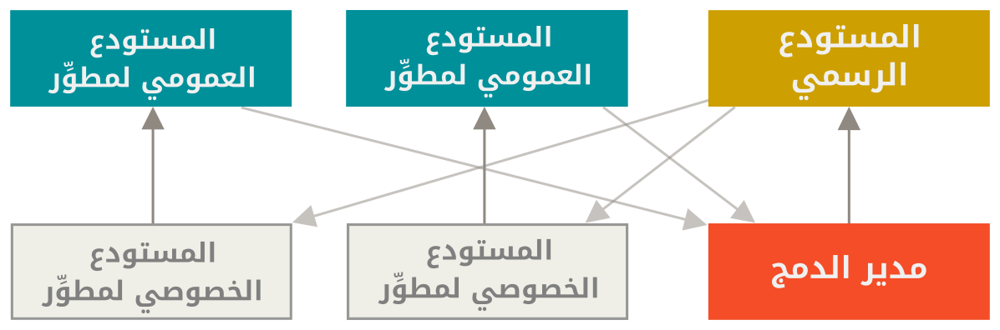
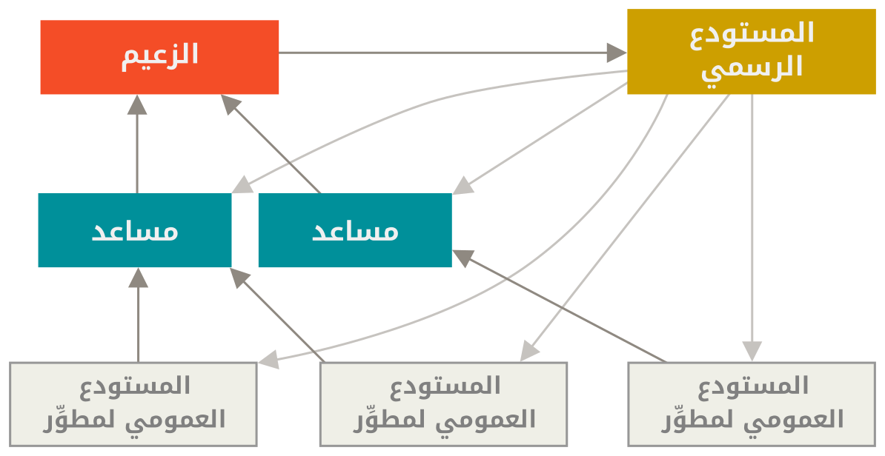

٥، ١، أساليب التطوير المتوزع
خلافًا للأنظمة المركزية، طبيعة جت المتوزعة تسمح بمرونة كبيرة في التعاون على تطوير المشروعات. ففي الأنظمة المركزية، الكل متساوون في أنهم نقاط فرعية تعمل مع مركز التقاء. أما في جت، فكل مطور يمكن أن يكون نقطةً أو مركزًا؛ كل مطور قد يساهم في مستودعات الآخرين وقد يرعى مستودعًا عموميًّا يبني الآخرون عليه ويساهمون فيه. يتيح هذا ضروبًا كثيرة من أساليب التطوير لمشروعاتك ومشروعات فريقك. لذا سنتناول بعضًا من أشهر الأساليب التي تعتمد على هذه المرونة. وسنرى مزايا وعيوب كلٍ منها. يمكنك اختيار أسلوب واحد، أو مزج خصائص بضعة أساليب كيفما يناسبك.
الأسلوب المركزي
في الأنظمة المركزية، يكاد ألا يوجد إلا أسلوب تعاون واحد: الأسلوب المركزي. مركز التقاء واحد، أيْ مستودع، هو الذي يقبل التعديلات، ويُزامن كل المساهمين مستودعاتهم معه. المطورون هم نقاط فرعية («عملاء» لنقطة الالتقاء المركزية)، ويتزامنون مع المركز.

فإذا استنسخ المستودع مبرمجان، وكلاهما عدّل فيه، فإن المبرمج الذي يدفع تعديلاته إلى المستودع أولًا لن يجد صعوبة، أما المبرمج الآخر فعليه أولا دمج عمل المبرمج الأول قبل دفع تعديلاته إلى المستودع، حتى لا يغيّر عمل الأول. هذا الأمر حقيقة في جت كما في Subversion (مثل جميع أنظمة إدارة النسخ المركزية)، وهذا الأسلوب يعمل جيدًا في جت.
فإذا كنت مرتاحًا مع أسلوب تطوير مركزي معين في شركتك أو فريقك، فيمكنك الاستمرار في اتباعه مع جت. ليس عليك إلا إعداد مستودع واحد، وإعطاء كل واحد في فريقك إذن الدفع؛ ولن يسمح جت لأحد بتغيير عمل الآخرين.
تخيل أن سمير وسميرة بدءا العمل في وقت واحد.
وأتم سمير تعديلاته ودفعها إلى الخادوم.
ثم أرادت سميرة دفع تعديلاتها، فسيرفض الخادوم،
ويخبرها أنها تريد دفع إيداعات ليست إيداعات تسريع، ولن يسمح لها إلا بعد أن تستحضر (fetch) الجديد وتدمجه (merge).
أسلوب التطوير هذا جذاب للكثيرين لأنه مألوف ومريح للكثيرين.
وليس هذا الأسلوب مقصورًا على جماعات التطوير الصغيرة؛ فنموذج التفريع في جت يسمح لمئات المطورين بالعمل بيُسر معًا على مشروع واحد، باستعمال عشرات الفروع في وقت واحد.
أسلوب مدير الدمج
يمكّنك جت من التعامل مع العديد من المستودعات البعيدة. فيسمح هذا بأسلوب تطوير فيه كل مطور له إذن الدفع إلى مستودعه العمومي، وإذن القراءة لمستودعات الآخرين كلهم. هذا غالبًا يشمل وجود مستودع رئيس يُعدّ المستودع «الرسمي». فللمساهمة في هذا المشروع، عليك استنساخه ودفع تعديلاتك إلى نسختك. عندئذٍ ترسل إلى القائم على المشروع طلبًا بجذب تعديلاتك. فيضيف مستودعك إلى المستودعات البعيدة في المشروع، ويختبر تعديلاتك على جهازه، ثم يدمجها ويدفعها إلى المستودع الرئيس. تجري هذه العملية هكذا (انظر شكل أسلوب مدير الدمج):
-
يدفع القائم على المشروع إلى مستودعه العمومي.
-
يستنسخ مبرمجٌ ما ذلك المستودع ويعدّل فيه.
-
يدفع هذا المبرمج إلى نسخته العمومية الخاصة به.
-
يرسل المبرمج (في رسالة بريد شابكي مثلا) إلى القائم على المشروع طلبًا بجذب تعديلاته.
-
يضيف القائم على المشروع مستودع المساهم إلى المشروع ويدمج التعديلات على جهازه.
-
يدفع القائم على المشروع هذه التعديلات إلى المستودع الرئيس.

هذا الأسلوب هو الأشهر في أدوات التطوير الملتقي مثل جتهب وجتلاب. فسهلٌ فيها اشتقاق مشروع ودفع تعديلاتك إلى نسختك المشتقة ليراها الجميع. من مزايا هذا الأسلوب إمكانك مواصلة العمل، وإمكان القائم على المستودع الرئيس أن يجذب تعديلاتك في أي وقت. فلا يحتاج المساهمون إلى انتظار المشروع أن يدمج تعديلاتهم، فكلٌ يعمل على راحته.
أسلوب الزعيم والمساعدين
هذا شكل من أشكال أسلوب «المستودعات العديدة». تتّبعه غالبًا المشروعات العملاقة ذات المئات من المساهمين. من أشهرها نواة لينكس. وفيه نجد عددًا من مديري الدمج، كلٌ منهم مسؤول عن جزء معين من المستودع، ويسمون المساعدين (lieutenants). ولجميع المساعدين مدير دمج واحد يسمى الزعيم أو الدكتاتور الخيّر (benevolent dictator). ويدفع الزعيم إلى المستودع المرجِع، الذي يجذب منه جميع المساهمين. تجري هذه العملية هكذا (انظر شكل أسلوب الزعيم والمساعدين):
-
يعمل المطورون العاديون في فروع موضوعات، ويعيدون تأسيس عملهم على الفرع الرئيس للمستودع المرجع الذي يدفع الزعيم إليه.
-
يدمج المساعدون فروع موضوعات المطورين في فروعهم الرئيسة.
-
يدمج الزعيم فروع المساعدين الرئيسة في فرعه الرئيس.
-
وأخيرا، يدفع الزعيم فرعه الرئيس إلى المستودع المرجع ليتسنّى للمطورين إعادة التأسيس عليه.

ليس هذا الأسلوب شائعًا، لكنه مفيد في المشروعات الضخمة وفي البيئات ذات المراتب العديدة من المطورين. فإنه يتيح لقائد المشروع (الزعيم) تفويض معظم العمل إلى الآخرين، وجمع أجزاء كبيرة من التعديلات في نقاط متعددة قبل دمجها معا.
أنماط إدارة فروع المصدر البرمجي
|
صنّف Martin Fowler دليلًا باسم “Patterns for Managing Source Code Branches” («أنماط إدارة فروع المصدر البرمجي»). يتناول هذا الدليل أساليب التطوير الشائعة في جت، ويشرح كيف تستعملها ومتى. وفيه كذلك قسم يقارن بين الدمج المتواتر والدمج المتباعد. الدليل بالإنجليزية: https://martinfowler.com/articles/branching-patterns.html |
خلاصة أساليب التطوير
هذه من أشهر أساليب التطوير المستعملة، الممكنة مع نظام إدارة نسخ متوزع مثل جت. لكن الكثير من التنويعات ممكنة حتى تلائم أسلوبك في الواقع. لأنك الآن قد تستطيع تحديد شكل الأسلوب الذي قد يلائمك، فسنتناول أمثلة محددة للقيام بالوظائف الأساسية التي تتكون منها الأساليب المختلفة. سنتعلم في الفصل التالي بعض أشهر أنماط المساهمة في مشروع.